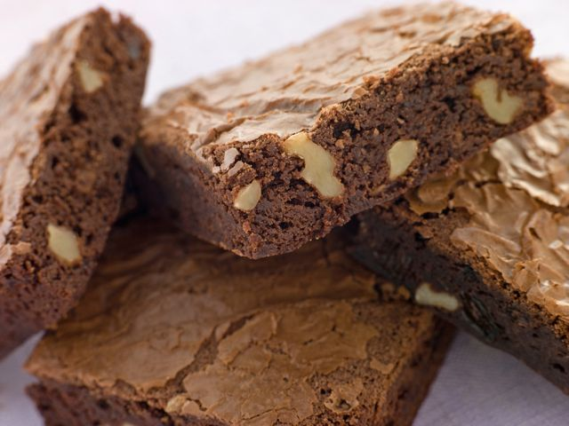

Ktharine Hepburn será para siempre una diosa del cine que nos ha regalado películas maravillosas. Y también nos ha dejado su legendaria receta de brownies para recordarla.
Es sencilla, básica, rápida y muy fácil, una de esas recetas que merece la pena tener en el cajón cuando queremos agasajar a los invitados o necesitamos un bocado dulce con mucho sabor a chocolate.
La receta fue publicada en The New York Times mediante una carta al editor firmada por Heather Henderson, vecina de la actriz. En ella contaba cómo su padre llevó unos brownies a la estrella en una ocasión en que estaba en el hospital, pero ella protestó por su mala calidad y no dudó en darle su receta. La clave de sus brownies: muy poca harina, poca temperatura en el horno y una textura húmeda interior.
Para 10 unidades
Dificultad: Difícil
Precalentar el horno a 165ºC y engrasar o cubrir con papel sulfurizado un molde cuadrado de unos 20 centímetros de lado. Derretir la mantequilla con el cacao en polvo, removiendo a fuego lento hasta conseguir una mezcla homogénea y suave. Retirar y dejar enfriar unos minutos. Echar en un recipiente mediano y añadir los huevos uno a uno, y la vainilla, batiendo con unas varillas. En otro recipiente mezclar la harina con el azúcar, la sal y las nueces. Incorporar a la mezcla de cacao y remover bien pero con suavidad, hasta tener una masa homogénea, sin grumos secos. Llenar el molde y hornear durante unos 35-40 minutos.
Algunos los prefieren calentitos y recién hechos, otros apuestan por dejarlos enfriar incluso en la nevera, pero en cualquier caso los legendarios brownies de Katharine Hepburn son un bocado delicioso que encantará a los más chocolateros. Con un vaso de leche fresca y un poco de helado de vainilla, es una merienda o postre para permitirse un capricho.